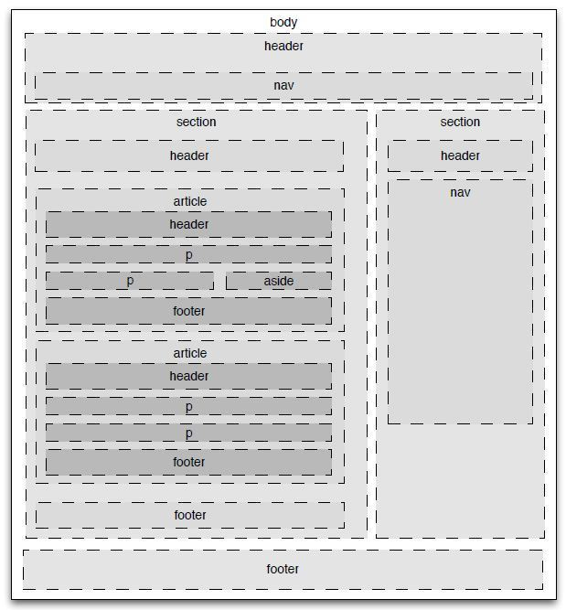

前言
学完了HTML的相关知识，所以正好总结一下，一些常用的HTML标签。因为HTML标签数量众多，所以这里只是介绍了最常用的相关内容。如果要看具体的HTML标签内容，可以参阅MDN。
一、结构化标签
首先介绍常常用于划分页面结构的标签，主要有：
- header: 定义页面/文章的头部内容，主要是介绍性的信息；
- nav: 用于定义导航链接；
- main: 用于定义页面主体内容；
- section: 用于定义某个版块，一般是列在文档大纲里，一般都有标题；
- article：定义一篇完整的文章；
- aside: 定义侧边栏，通常是无关紧要的内容，新闻链接等；
- footer: 定义页面底部内容,通常是作者、版权信息等；
- div：页面内容的单独块划分，常作为容器钩子没有意义，一般都要有Class;
- 其他：包括 h1、p、span等
可以用一张图，概括以上的标签，即：

二、容易混淆的标签
接下来介绍一些容易混淆的标签，他们可能有类似之处，但用法是有区别的
1 b和strong
两个标签都可以让包含的文字粗体显示，但是有以下区别：
- stong表示 强调，突出的是内容上的 重要性（需要尽快被看到）、严重性或者紧急性;
- b表示的是 样式上的粗体，仅仅是从样式上改变字体显示特征，不含有 主观情绪